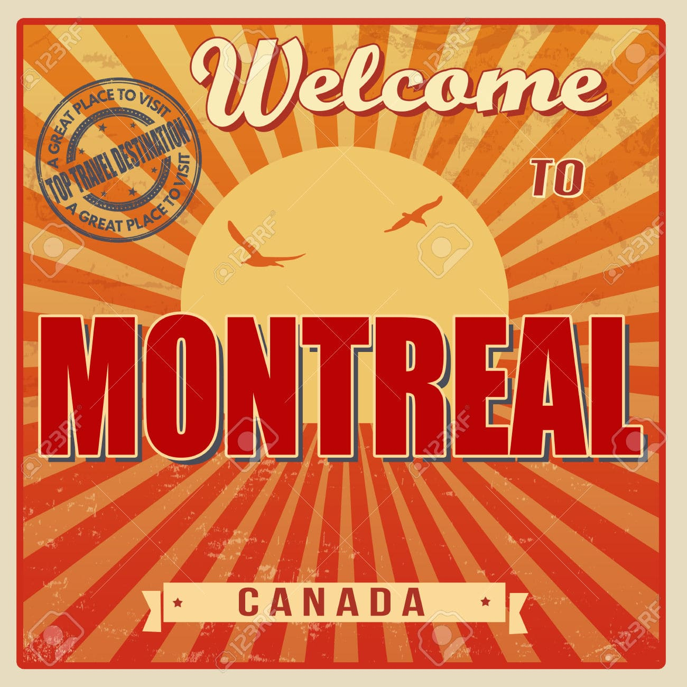
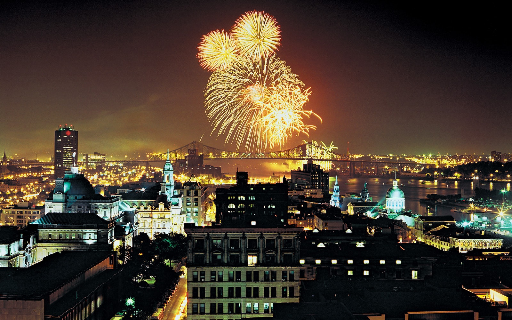

Welcome to the Official Tourism Site of
City of Montréal,Canada

Montréal is the largest city in Canada's Québec province. It’s set on an island in the Saint Lawrence river and named after Mt. Royal, the triple-peaked hill at its heart. Its boroughs, many of which were once independent cities, include neighbourhoods ranging from cobblestoned, French colonial Vieux-Montréal – with the Gothic Revival Notre-Dame Basilica at its centre – to bohemian Plateau.
Originally called Ville-Marie,or "City of Mary",it is named after Mount Royal,the triple-peaked hill in the heart of the city. The city is on the Island of Montreal, which took its name from the same source as the city,and a few much smaller peripheral islands, the largest of which is Île Bizard. It has a distinct four-season continental climate with warm to hot summers and cold snowy winters.
Montreal is a perfect blend of urban life and authenticity. It is also one of the world’s friendliest cities. Over the years, Montreal has received many tiles. Montréal is consistently rated as one of the world’s most liveable cities. It is known as a clean and pleasant city. Alongside the historic cityscape of “Old Montreal”, the city’s attractions include a strong arts community and a range of musical, cultural and seasonal festivals.
There are so many things that make Montréal unique. The city is filled with little treasures and well preserved pieces of history. Simply take a walk through the city of Montréal and you will start discovering pieces of the city’s marvellous history. Take a guided walk throughOld Montréal, the downtown core, or otherneighbourhoods, or visit one of the city’s manymuseums to learn more about its history. You can also take in stunning panoramic views from Mount Royal or have a picnic in Lafontaine Park. Whether you choose to head to Jean Drapeau Park, or have a relaxing picnic at the old port, you will have an unforgettable visit to this very special city.
Montréal is known as the city of festivals, the city of design, and a city of culture. Montréal is a multicultural city in which more than 120 cultural communities live. This makes Montréal an extremely diverse and culturally rich city. Every year, over 100 festivals and events take place in Montréal. More than half of these events are international festivals and some of the more popular events can gather well over 250,000 spectators. Three of the world’s biggest festivals take place in Montréal. Montréal’s International Jazz Festival, the Just for Laughs Festival, and theFrancofolies de Montreal alone attract more than 5 million festival-goers to Montréal every year.
|  |
| Montreal Tourism- Light's Festival |
Montreal is a city of international stature. Its summer festivals, restaurants and night life make it a popular destination for travellers from around the world. As a transport hub, Montreal has many direct flights to and from Europe, the United States, Latin America and other Canadian cities, and easy connections to many other flights originating from Toronto. Montreal is served by train and bus service from the United States and the rest of Canada and is an obvious starting point for international travellers who wish to visit other parts of North America.
Downtown Montreal is home to McGill University and shopping venues, while Old Montreal contains a plethora of historic buildings, the oldest of which date back to the 17th century. Outdoor opportunities abound in Montreal, including a network of cycling and walking paths through one of the city's many parks. For the more adventurous, river surfing is popular on the Saint Lawrence River, while kayaking opportunities are available on the Lachine rapids. Visitors can also ice skate or participate in cross country skiing in one of many parks.